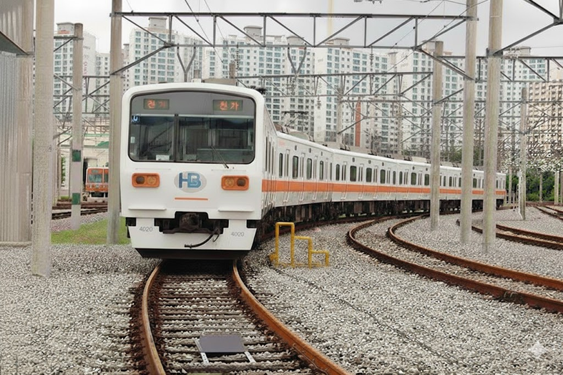
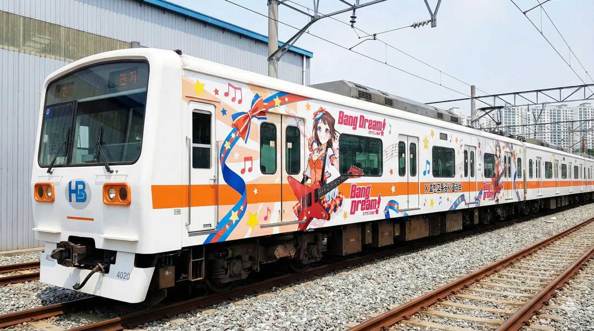
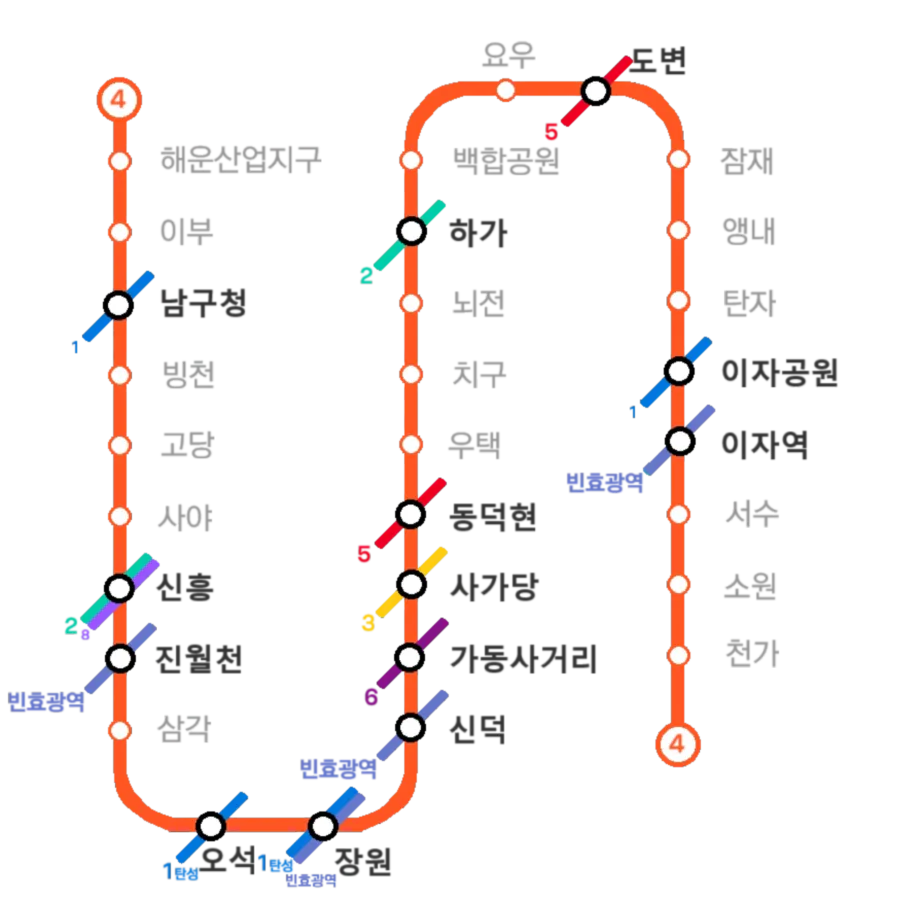

|
|||
|
   노선도
|
|||
| 노선 정보 | |||
|---|---|---|---|
| 노선 분류 | 도시철도 | ||
| 차량 분류 | 중형 중전철 | ||
| 기점 | 해운산업지구역 | ||
| 종점 | 천가역 | ||
| 역 수 | 30개 | ||
| 구성 노선 | 효빈 도시철도 4호선 | ||
| 상징색 | 주황색 (#FF5522) | ||
| 개통일 | 2003년 3월 5일 (22주년) | ||
| 소유자 | 효빈광역시 | ||
| 운영사 | 효빈교통공사 | ||
| 사용 차량 | 효빈교통공사 4000호대 전동차 | ||
| 차량기지 | 고해차량사업소 평당차량사업소 | ||
| 노선 제원 | |||
| 노선연장 | 40.86km | ||
| 궤간 | 1,435㎜ (표준궤) | ||
| 선로구성 | 복선 | ||
| 급전방식 | 직류 1,500V 가공전차선[2] | ||
| 신호방식 | Kyosan Signal ATC/ATO | ||
| 최고속도 | 80㎞/h | ||
| 표정속도 | 30.7㎞/h (완행) 48.2km/h (급행) | ||
| 통행방향 | 우측통행 | ||
| 지상구간 | 해운산업지구, 잠재, 천가 | ||
| 개통 연혁 |
2003.3.5 남구청 ↔ 이자 2006.5.11 이자 ↔ 소원 2006.6.28 앵내역, 탄자역 2015.5.31 해운산업지구 ↔ 남구청 2019.2.4 소원 ↔ 천가 |
||

1. 개요
효빈 도시철도의 한 노선이자 효빈권 전철의 핵심 운행 계통으로, 2003년 1단계 구간이 개통하였다. 운영기관은 효빈교통공사이며 운행하는 열차는 효빈교통공사 4000호대 전동차, 통행방식은 지자체 도시철도 규격에 맞춘 우측통행이다. 노선 상징색은 ● 주황색이며, 색이 품은 의미는 도시를 깨우는 '활력'이다.
개통 이전 건설 기획 단계에서는 가칭 이자평당선으로 불렸으나, 정식 명명 규칙에 따라 최종적으로 4호선으로 확정되어 절찬리에 운행 중이다. 배차간격은 출퇴근(RH) 시에는 4~5분, 평시(NH)에는 6~7분, 첫차 및 막차 시간대에는 10~13분 간격으로 승객들을 미친 듯이 실어 나르는 매우 준수하게 배차되는 빗자루 노선 중 하나다.
2. 건설 목적
- 1호선 이자-평당 간 혼잡도 완화 및 2호선 급행 바이패스 역할: 개통 전 1호선의 살인적인 가축수송을 분담하고, 도심을 둥글게 빙빙 돌아가는 순환선 2호선의 고질적인 단점을 보완하여 신흥-하가역 구간을 빠르게 가로지르는 전략적 바이패스 성격을 띤다.
- 거대 택지지구 통근 수요 흡수: 새로운 대형 베드타운인 이자지구와 평당지구 근방에서 쏟아지는 아침 출근러들을 흡수한다. 특히 교통 사각지대였던 덕현동 지역 및 남구 공단지역, 뇌전공업지구 간의 다이렉트 이동이 4호선 개통으로 극적으로 편해졌다.
- 외곽 및 공단 접근성 개선: 이자지구와 연계되는 도변읍, 요우지구, 앵내지구의 접근성 개선 및 잠재공업단지 이동 편의성 증진. 다만 핌피(PIMFY)를 받아주며 이것저것 다 챙기려다 보니 노선 선형이 은근히 꼬불꼬불해져서, 급행이 없으면 1호선 대비 체감 이동 속도가 팍 떨어지는 게 흠이다.
3. 역사
1989년, 당시 부동산 신도심으로 한창 주가를 올리던 평당신도시와 교통 요충지인 이자역 간을 다이렉트로 직결하는 평당이자선으로 처음 기획되었다. 원래는 현재 3호선보다 훨씬 먼저 삽을 뜨고 개통할 예정이었으나, 안천구에 있던 국제공항이 급작스럽게 기도군으로 이전하는 초대형 행정 이슈가 터지는 바람에, 공항 연계가 시급해진 3호선에 예산과 우선순위가 밀려버리는 뼈아픈 비운을 맞이했다.
1996년 12월 30일에 우여곡절 끝에 간신히 착공하여 2001년 4월 개통을 목표로 달렸으나, 이번엔 IMF 외환 위기를 직격으로 맞고 공사 자금이 동결되며 대폭 축소 및 지연되었다. 결국 눈물겨운 공사 끝에 2003년 3월 5일에 1단계 구간인 남구청 ↔ 이자 (탄자, 앵내역 무정차 통과) 구간이 우선 개통되었다. 곧이어 소원면 연장 공사가 시작되었으며, 2006년 5월 11일 소원 방면 연장선이 개통되었다. 당시 텅 빈 허허벌판이어서 무정차 통과하던 탄자역과 앵내역은 박현만 시장이 낙선 직전인 2006년 6월 28일에 민원을 수용하여 간신히 영업을 개시시켰다.
4호선은 '철도 파괴자' 윤대환 전 시장의 철도 백지화 만행을 비교적 덜 받은 노선으로 알려져 있으나, 속사정을 들여다보면 연선 주민들의 피눈물이 흐른다. 2011년 개통을 목표로 2007년에 착공했어야 할 해운산업지구 남부 연장이 윤대환의 고의적인 예산 삭감과 훼방으로 전면 중단된 것이다. 특히 이 구간은 윤대환이 정치적 라이벌들을 견제하기 위해 가장 악질적으로 탄압했던 노선이라, 평당3동, 평당4동 지역 주민들의 분노가 하늘을 찔렀다.
윤대환이 비리로 쇠고랑을 차고 퇴출당한 후인 2010년에서야 공사가 극적으로 재개되었지만, 일부 정치권의 '공단 지역 깡촌에 예산 낭비' 프레임 공격으로 공사가 질질 끌리다가 무려 2015년 5월 31일에야 간신히 남부 연장선을 개통했다. 반면 2017년 착공한 북쪽 천가 연장선은 예정일인 2019년 2월 4일에 한 치의 오차 없이 깔끔하게 조기 개통되어, 남구와 북구의 행정력(혹은 핌피력) 차이가 극명하게 비교되는 안줏거리가 되기도 했다.
4. 환경 (안내방송)
정확한 안내방송 문장과 디테일한 표현을 원한다면 차내 안내방송은 안내방송/열차/도시철도를, 역내 안내방송은 안내방송/역을 참고하기 바랍니다.
4.1. 안내방송 BGM
| 구분 | 상행 (천가 방향) | 하행 (해운산업지구 방향) | 종착 | 환승 | 출발 | ||
|---|---|---|---|---|---|---|---|
| 완행 | 급행 | 완행 | 급행 | ||||
| 4호선 일반 | 파도내음 | 휘황곡 | 물길소리 | 소라의눈물 | 잔잔바다 | 뱃사공 삼중주 | 효빈교통공사 로고송 |
| 4호선 콜라보 | HAF(효빈 애니메이션 페스티벌) 기간 한정 특별 BGM 사용 (매년 대상 캐릭터 및 음원 변경) | ||||||
4.2. 안내방송 텍스트
| 언어 | 일반 및 환승 안내방송 | 종착 안내방송 |
|---|---|---|
| 한국어 | "이번 역은 [역명], [역명]역입니다. 내리실 문은 [방향]입니다. [환승노선]으로 갈아타실 고객께서는 이번 역에서 내리시기 바랍니다." | "이번 역은 이 열차의 마지막 역인 [종착역], [종착역]역입니다. 내리실 문은 [방향]입니다. 오늘도 효빈교통공 열차를 이용해 주셔서 고맙습니다. 안녕히 가십시오." |
| 영어 | "This stop is [역명], [역명]. The doors are on your [방향]. You can transfer to the [환승노선]." | "This stop is [종착역], [종착역]. The last station. The doors are on your [방향]. Thank you for traveling with HyobinMetro." |
| 중국어 | "前方到站是 [역명] 站。 需要换乘 [환승노선] 的乘客，请在本站下车。" | - |
| 일본어 | "次は、[역명]、[역명]駅です。 [환승노선] はお乗り換えです。" | - |
5. 역할
초기 단편적인 기획이었던 이자지구와 평당신도시 간의 연결이라는 작은 틀을 벗어나, 현재는 연선 내 거대 신규 주거단지 및 공업단지들을 유기적으로 잇는 핵심 대동맥 혈관 역할을 톡톡히 해내고 있다. 도변-이자 간 통근, 천가-소원에서 이자로 쏟아지는 출퇴근 러시, 그리고 이자에서 잠재공단이나 신흥역(효빈공단)으로 쏟아지는 노동자들의 거대한 파도를 4호선이 모두 쓸어 담아 처리하고 있다.
특히 2024년에 새로 뚫린 8호선과의 환승 연계가 말 그대로 대박을 터뜨렸다. 남구청이나 신흥역에서 내린 엄청난 수의 8호선 환승객들을 고스란히 4호선이 블랙홀처럼 빨아들이면서, 정작 수요 예측 실패로 적자에 시달리는 신규 노선인 8호선은 눈물을 흘리는데, 터줏대감인 4호선은 가만히 앉아서 운임 수익이 수직 상승하는 기이한 현상이 벌어지고 있다. 재주는 8호선이 부리고 돈은 4호선이 챙기는 완벽한 창조경제.
6. 소재지
| 운영사 | 소재지 | 구분 | 구간 | 역 개수 |
|---|---|---|---|---|
| 효빈교통공사 | 효빈광역시 | 남구 | 해운산업지구역~진월천역 | 8 |
| 중구 | 삼각역~신덕역 | 4 | ||
| 동구 | 가동사거리역~동덕현역 | 3 | ||
| 청엽구 | 우택역 | 1 | ||
| 안천구 | 치구역~백합공원역, 탄자역~서수역 | 8 | ||
| 탄성군 | 요우역~앵내역, 소원역~천가역 | 6 |
7. 향후 계획
7.1. 추가 연장 (약산시 연장)
현재 남부의 핵심 차량 기지인 고해차량기지 부근까지 4호선 지선 혹은 본선을 전격 연장하여 고해역과 환승으로 잇고, 이를 바탕으로 약산시 혹은 더 나아가 치원군까지 노선을 무한 증식(?) 시키자는 떡밥이 꾸준히 돌고 있다.
현재 약산시는 1호선과 빈효선 광역전철이 모두 든든하게 들어가 있지만, 두 노선 모두 동서 방향으로만 뻗어있어 정작 남북축으로 이동하는 대중교통망이 매우 부실하다는 지적이 많다. 이에 남북을 시원하게 수직으로 긋는 4호선을 약산시 깊숙이 들이자는 방안이 약산 시민들에게 꽤나 강력한 설득력을 얻고 있으며, 결국 효빈시 도시철도망 구축계획 검토 노선에 정식으로 이름을 올리며 파란불(청신호)이 켜진 상태다.
7.2. 추가역 신설 (성저역)
탄자역과 앵내역 사이의 역간 거리가 무려 3.23km에 달해 도심 치고는 꽤나 멀고 휑한데, 최근 이 구간 한복판에 대규모 민간분양 택지인 성저택지지구가 들어서면서 상황이 급변했다. 입주민들의 "우리 아파트 앞에도 전철역 내놔라"는 격렬한 성저역 신설 핌피(PIMFY)와 민원 폭탄이 매일같이 시청에 쏟아지고 있으며, 현재 정치권의 압박에 못 이겨 타당성 조사 용역에 급하게 착수한 상태다. 급행 쌩쌩 달리던 구간에 브레이크가 하나 더 생길 위기다.
8. 역 목록
| 역번 | ㎞ | 역명 | 승강장 | 급행 | 환승노선 | 소재지 |
|---|---|---|---|---|---|---|
| 401 | 0.0 | 해운산업지구 | ■││■ (지상 1층) | 급 | - | 남구 |
| 402 | 1.6 | 이부(二部) | ■││■ (지하 3층) | 급 | - | 남구 |
| 403 | 2.65 | 남구청(南區廳) | ■││■ (지하 3층) | 급 |   | 남구 |
| 404 | 3.45 | 빙천(氷川) | ■││■ (지하 3층) | - | - | 남구 |
| 405 | 4.34 | 고당(古堂) | ■││■ (지하 2층) | 급 | - | 남구 |
| 406 | 5.49 | 사야(四野) | ■││■ (지하 2층) | - | - | 남구 |
| 407 | 6.39 | 신흥(新興) | ■││■ (지하 2층) | 급 |  | 남구 |
| 408 | 7.51 | 진월천(鎭月川) | ■││■ (지하 2층) | 급 | 남구 | |
| 409 | 8.98 | 삼각(三角) | ■││■ (지하 3층) | - | - | 중구 |
| 410 | 9.78 | 오석(鴉石) | ■││■ (지하 3층) | - | | 중구 |
| 411 | 10.94 | 장원(長原) | ■││■ (지하 3층) | 급 | | 중구 |
| 412 | 12.24 | 신덕(新德) | ■││■ (지하 2층) | 급 | 중구 | |
| 413 | 13.72 | 가동사거리 | ■││■ (지하 2층) | 급 | 동구 | |
| 414 | 14.88 | 사가당(社可堂) | ■││■ (지하 2층) | 급 | 동구 | |
| 415 | 16.22 | 동덕현(東德縣) | ■││■ (지하 3층) | 급 | 동구 | |
| 416 | 17.80 | 우택(羽澤) | ■││■ (지하 3층) | 급 | (예정) | 청엽구 |
| 417 | 19.28 | 치구(治口) | ■││■ (지하 3층) | - | - | 안천구 |
| 418 | 20.38 | 뇌전(瀬 田) | ■││■ (지하 3층) | - | - | 안천구 |
| 419 | 22.24 | 하가(下街) | ■││■ (지하 3층) | 급 | | 안천구 |
| 420 | 23.57 | 백합공원 | ■││■ (지하 3층) | - | - | 안천구 |
| 421 | 26.56 | 요우(曜雨) | ■││■ (지하 3층) | 급 | - | 탄성군 |
| 422 | 27.99 | 도변(渡 辺) | ■││■ (지하 3층) | 급 | 탄성군 | |
| 423 | 29.74 | 잠재(潛在) | ■││■ (지상 1층) | - | - | 탄성군 |
| 424 | 31.22 | 앵내(桜内) | ■││■ (지하 3층) | 급 | - | 탄성군 |
| 424-1 | 32.12 | 성저 | 미정 | - | - | 안천구 |
| 425 | 33.11 | 탄자(誕者) | ■││■ (지하 3층) | 급 | - | 안천구 |
| 426 | 34.11 | 이자공원(梨子公園) | ■││■ (지하 3층) | 급 | | 안천구 |
| 427 | 34.86 | 이자(梨子驛) | ■││■ (지하 3층) | 급 | 안천구 | |
| 428 | 36.40 | 서수(瑞穂) | ■││■ (지하 3층) | - | - | 안천구 |
| 429 | 38.67 | 소원(小原) | ■││■ (지하 1층) | 급 | - | 탄성군 |
| 430 | 40.86 | 천가(千歌) | ■││■ (지상 1층) | 급 | - | 탄성군 |
9. 현존 운행 계통 및 급행열차
9.1. 운행 패턴 (완행)
4호선의 가장 일반적인 행선지 패턴은 다음과 같이 쿨하게 전 구간을 왕복하는 형태다.
차량기지(고해, 평당) 입출고 및 심야 운행을 위해 첫차/막차 시간대 한정으로 떨어지는 희귀 행선지도 존재한다.
9.2. 급행열차 (Rapid)
4호선은 무려 총연장 40km가 넘어가는 만만치 않은 길이를 자랑하며, 1호선의 포화 수요를 덜어주고 남북 외곽 택지지구의 출퇴근을 구원하기 위해 급행열차가 절찬리에 운행 중이다. 하지만 타 핵심 노선들과 비교하면 다소 눈물겨운(?) 인프라 스펙을 지니고 있다.
- 무자비한 정차역 패싱: 총 30개 역 중 무려 9개 역(빙천, 사야, 삼각, 오석, 치구, 뇌전, 백합공원, 잠재, 서수)을 깔끔하게 버리고 통과한다.
- 미친 역간 거리의 짜릿함: 외곽 구간에서 급행이 낼 고속 주행 포텐셜이 문자 그대로 폭발한다.
우택 ↔ 하가 구간은 무려 4.44km, 하가 ↔ 요우 구간은 4.32km, 소원 ↔ 이자는 3.81km에 달한다! 이 어마어마한 거리를 무정차로 75km/h 풀악셀을 밟고 시원하게 찢으며 달릴 때면 오늘 기관사님 기분 째지시나 보다 롤러코스터를 탄 듯한 미친 체감 속도를 자랑한다. - 중선 없는 야매 급행의 비애: 하지만 4호선에는 1호선이나 2호선처럼 역 한가운데를 시원하게 관통하여 앞차를 제끼는 고속 전용 선로(중선) 따위는 애당초 파놓지 않았다. 대신 일부 역에 설치된 대피선(부본선)으로 완행열차를 옆으로 비켜 세우고 추월하는 고전적이고 눈물겨운 방식을 사용한다. 본선 한가운데서 멈춰서는 최악의 사태는 면했지만, 중선 통과 방식에 비해 대피역 진입 시 감속이 불가피하고 다이아가 1분만 꼬여도 얄짤없이 앞서가는 완행열차의 꽁무니를 졸졸 따라가야 하는 환장의 '기차놀이'가 일상이다. 물론 대피선에서 완행 승객들의 부러운 시선을 받으며 제치고 나갈 때의 쾌감은 쩔지만, 앞차 막히면 완행이랑 도착 시간이 똑같은 마법이 펼쳐진다.
10. 운행 차량
전 구간 효빈교통공사 4000호대 전동차 단일 차종으로 운행 중이며, 배차 유연성과 수송력 조절을 위해 6량 1편성 또는 5량 1편성이 섞여서 굴러간다. (이 때문에 플랫폼 바닥에 5량 정지선과 6량 정지선이 따로 그려져 있어 승객들의 치열한 눈치싸움이 벌어진다.)
현재 운행 중인 차량은 6량 10편성(출퇴근 지옥철 시간대 핵심 투입), 5량 35편성(평시 빗자루 배차용)으로 총합 45개 편성(235량)이 이자평당선의 혈관을 쉴 새 없이 돌며 알차게 굴러가고 있다.
11. 역별 승하차 통계
2025년 최신 기준 효빈 4호선의 일평균 승하차 객수 통계 및 역별 순위이다. 환승역의 경우 타 노선의 승하차객은 철저히 배제한 순수 4호선 게이트 이용객만을 산정했다.
| 효빈 도시철도 4호선 노선 총합 (2025) | ||||||
|---|---|---|---|---|---|---|
| 역수 | 구간 | 역당 일평균 | 전체 일평균 승하차 | 2025년 누적 승하차 | 최다 이용역 | 최저 이용역 |
| 30개역 | 천가 ↔ 해운산업지구 | 13,552명 | 406,562명 | 148,395,130명 | 이자 (42,031명) | 사야 (2,211명) |
| 일일 이용객 수 구간별 역 분포 현황 | ||||||
|---|---|---|---|---|---|---|
| 역수 | 구간 | 5만명 이상 (초혼잡) | 2만~5만명 (혼잡) | 1만~2만명 (보통) | 5천~1만명 (한산) | 5천명 이하 (공기수송) |
| 30개 | 천가 ↔ 해운산업지구 | 없음 | 7개역 | 9개역 | 7개역 | 7개역 |
| 순위 | 역명 | 일평균 | 2025년 총합 | 순위 | 역명 | 일평균 | 2025년 총합 |
|---|---|---|---|---|---|---|---|
| 1 | 이자역 | 42,031 | 15,341,315 | 16 | 신덕 | 10,123 | 3,694,895 |
| 2 | 남구청 | 32,714 | 11,940,610 | 17 | 백합공원 | 9,351 | 3,413,115 |
| 3 | 이자공원 | 30,682 | 11,198,930 | 18 | 고당 | 8,251 | 3,011,615 |
| 4 | 탄자 | 27,591 | 10,070,715 | 19 | 이부 | 7,391 | 2,697,715 |
| 5 | 신흥 | 24,652 | 8,997,980 | 20 | 진월천 | 6,388 | 2,331,620 |
| 6 | 앵내 | 23,131 | 8,442,815 | 21 | 삼각 | 6,331 | 2,310,815 |
| 7 | 도변 | 20,562 | 7,505,130 | 22 | 소원 | 5,548 | 2,025,020 |
| 8 | 우택 | 19,314 | 7,049,610 | 23 | 치구 | 5,372 | 1,960,780 |
| 9 | 요우 | 18,311 | 6,683,515 | 24 | 빙천 | 4,895 | 1,786,675 |
| 10 | 장원 | 18,283 | 6,673,295 | 25 | 천가 | 4,241 | 1,547,965 |
| 11 | 가동사거리 | 15,431 | 5,632,315 | 26 | 서수 | 3,989 | 1,455,985 |
| 12 | 동덕현 | 14,472 | 5,282,280 | 27 | 해운산업지구 | 3,348 | 1,222,020 |
| 13 | 오석 | 13,892 | 5,070,580 | 28 | 뇌전 | 3,143 | 1,147,195 |
| 14 | 하가 | 11,561 | 4,219,765 | 29 | 잠재 | 2,534 | 924,910 |
| 15 | 사가당 | 10,821 | 3,949,665 | 30 | 사야 | 2,211 | 807,015 |
12. 여담 및 마스코트
12.1. 운행 및 인프라 여담
- 지옥의 이자-평당 출퇴근길: 1호선의 과부하를 덜어주기 위해 만들었다지만, 매머드급 택지인 이자지구와 평당지구 양쪽에서 쏟아지는 출근하는 직장인들과 등교하는 학생들 덕분에 출퇴근 시간이 되면 4호선 역시 터져나간다. 특히 신흥역이나 남구청역으로 향하는 아침 하행 급행은 탑승 자체가 거대한 육체적 미션이다. 살려주세요 사람 살려 문이 안 닫혀요 가방 끼었어요
- 야매 급행의 한계, 환장의 기차놀이: 4호선은 멋지게 급행열차를 굴리면서도 고속 통과용 중선(가운데 선로)을 파놓지 않고 역의 대피선(부본선)에만 의존하는 아쉬운 설계 구조를 자랑한다. 완행을 대피선에 짱박아두고 안전하게 추월할 수 있어서 망정이지, 출퇴근 시간에 다이아가 조금이라도 꼬이면 1분 1초가 급한 급행열차가 앞서가는 완행열차 엉덩이에 바짝 붙어 거북이처럼 기어가는 '기차놀이(꼬리물기)'가 어김없이 벌어진다. 역간 거리가 멀어서 스로틀을 좀 당겨볼까 싶으면 어김없이 대피역 진입을 위해 감속하거나, 앞차 간격 때문에 삐그덕 브레이크를 밟아야만 한다. 대피선이라도 있는 게 어디냐며 위안 삼기엔 당장 지각 위기에 처한 승객들 속은 까맣게 타들어 간다.
- 8호선 환승객의 블랙홀: 막대한 세금을 쏟아붓고도 수요 예측 실패로 적자에 시달리는 신규 노선 8호선의 애꿎은 승객들이 남구청역이나 신흥역에서 무조건 4호선으로 쓸려 들어오고 있다. 덕분에 4호선은 가만히 앉아서 매일같이 수익이 불어나는 엄청난 어부지리를 누리는 중이다. 재주는 8호선이 부리고 돈은 4호선이 달달하게 챙긴다.
12.2. 공식 마스코트
효빈교통공사가 일본의 철도무스메 모에화 마케팅에서 영감을 받아 기획한 효빈메트로 마스코트 캐릭터 라인업의 당당한 멤버다. 4호선을 책임지는 공식 마스코트 캐릭터 '다로나'의 프로필은 아래와 같다.
- 상징색 관련 여담 (키라키라콜라보): 4호선의 상징색인 주황색(#FF5522)이 인기 미디어 믹스 프로젝트 BanG Dream!의 주인공 토야마 카스미의 이미지 컬러 및 별 모양 모티브와 완벽하게 겹친다. 이 무서운 우연 덕분에 오타쿠들 사이에서 노선 별명이 '카스미선' 혹은 '키라키라선'으로 불리더니, 결국 효빈교통공사가 찐으로 부시로드와 협약을 맺고 카스미 공식 래핑열차를 실제로 운행해 버리는 기염을 토했다! 승강장 전광판에 열차가 들어올 때 왠지 '반짝반짝 두근두근'한 브금이 환청처럼 들리는 것 같다는 목격담이 심심찮게 전해진다. 물론 진짜 브금을 틀어주는 건 아니니 착각이다.
- 별 모양의 저주(?): 4호선 전체 노선도를 자세히 들여다보면 특정 구역에서 별(★) 모양의 모서리처럼 날카롭게 꺾이는 구간이 있다는 루머가 돌았으나, 지도를 펴놓고 확인해 본 결과 사실이 아님이 밝혀졌다. 만약 토야마 카스미가 시장 자리에 앉아서 4호선 노선도를 펜으로 직접 그렸다면 정말 별 모양이 나왔을지도 모르는 일이다.